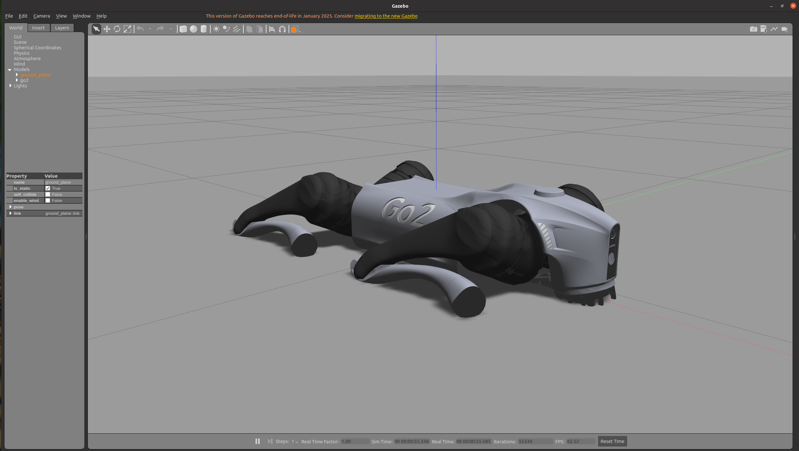
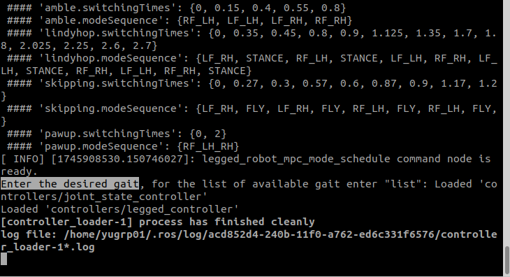
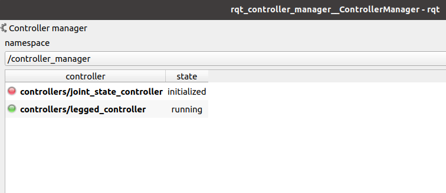

宇树Go2机器狗
宇树(Unitree)Go2是一款高性能的四足机器人，是宇树科技推出的高级消费级和教育用机器狗产品，官方的仿真不支持高层控制命令，比如速度控制、指点控制等，仅支持关节控制。这里介绍如何在Gazebo中实现高层控制命令仿真。
仿真环境
- Ubuntu 20.04
- ROS Noetic
环境搭建
项目基于legged_control仓库搭建，引入宇树Go2机器狗的URDF模型，使用Gazebo仿真，使用MPC控制算法控制机器狗的运动。
下载所有仓库，可用https://gh-proxy.com/github.com/替换https://github.com/
1
2
3
4
5
6
7
8
9
10
11
12
13mkdir -p unitree_ws/src
cd unitree_ws/src
git clone https://github.com/Feng1909/legged_control_go2.git
# 克隆OCS2
git clone https://github.com/leggedrobotics/ocs2.git
# 克隆pinocchio
git clone --recurse-submodules https://github.com/leggedrobotics/pinocchio.git
# 克隆hpp-fcl
git clone --recurse-submodules https://github.com/leggedrobotics/hpp-fcl.git
# 克隆ocs2_robotic_assets
git clone https://github.com/leggedrobotics/ocs2_robotic_assets.git
# Install dependencies
sudo apt install liburdfdom-dev liboctomap-dev libassimp-dev编译工作空间
1
2
3catkin config -DCMAKE_BUILD_TYPE=RelWithDebInfo
catkin build ocs2_legged_robot_ros ocs2_self_collision_visualization
catkin build legged_controllers legged_unitree_description运行仿真
1
2
3
4# 指定机器狗模型
export ROBOT_TYPE=go2
# 加载Gazebo模型
roslaunch legged_unitree_description empty_world.launch此时可以看到Gazebo中加载了Go2机器狗模型，但是没有控制命令，机器狗不会动。接下来需要加载控制命令。

启动控制器
1
roslaunch legged_controllers load_controller.launch cheater:=false
终端可以输入期望的步态

可选的步态有： * stance * trot * standing_trot * flying_trot * pace * standing_pace * dynamic_walk * static_walk * amble * lindyhop * skipping * pawup 先输入`stance`，新起一个终端，有两种方法可以启动控制器 1. 命令行启动2. 可视化界面启动1
2
3
4
5rosservice call /controller_manager/switch_controller "start_controllers: ['controllers/legged_controller']
stop_controllers: ['']
strictness: 0
start_asap: false
timeout: 0.0"选择`/controller_manager`，右键点击`controllers/legged_controller`，点击`Start`按钮，启动控制器。1
2sudo apt install ros-noetic-rqt-controller-manager
rosrun rqt_controller_manager rqt_controller_manager
3. 发布控制指令 可使用/cmd_vel指定速度控制，但是需要将`stance`修改为移动状态的一种当然，也可以使用
rqt命令加载插件的方式将几个终端放在一起，需要import提前在legged_control_go2文件夹下设置好的Default.perspective文件
我是学生，给我钱